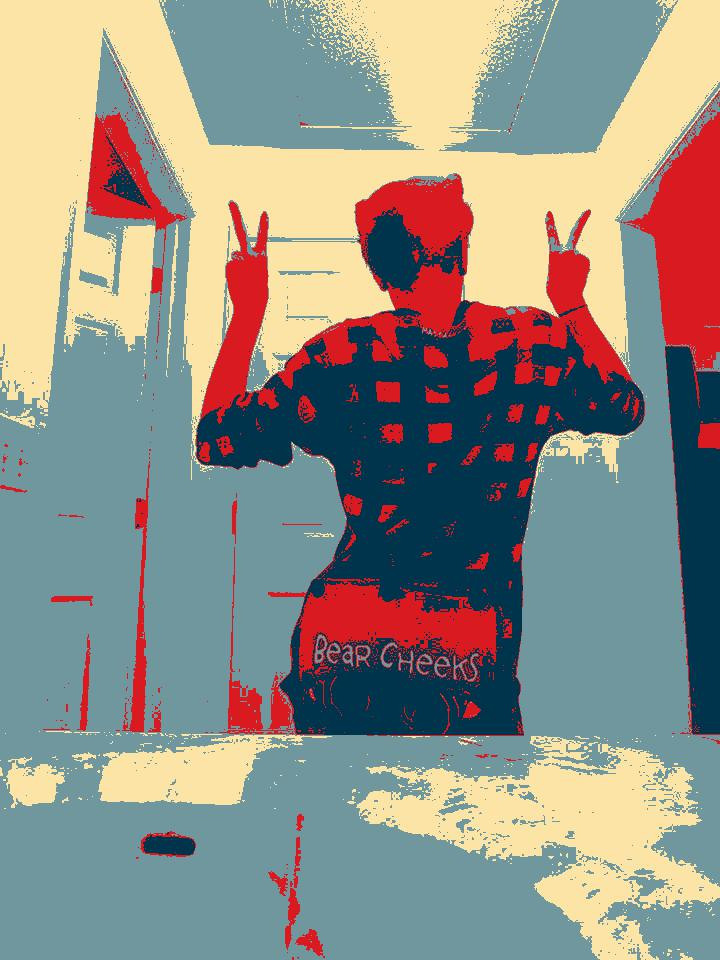
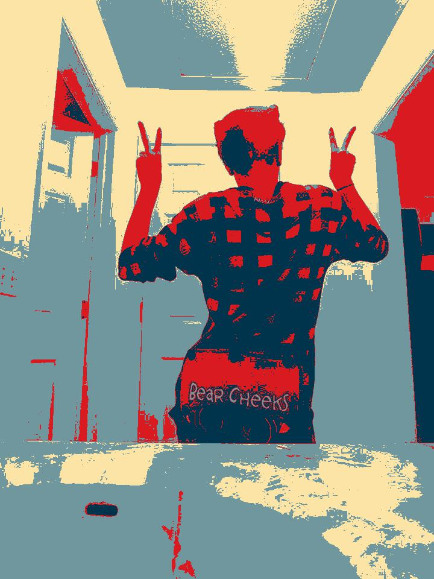

All about Layla Flight

I was born in Manhattan at Mount Sanai Hospital and raised in the Bronx. Moved to brooklyn eventually and currently live in Manhattan. I attend the Williamsburg Highschool for Art and Technology
Things I Likes
- Netflix/Hulu
- Watching Movies
- Going on the Internet
- Listening to music
Favorite Foods
- French Fries !!
- Pizza
- Beef
- Cheese
- Cereal
Fun Fact ^_^
I'm Puerto Rican
Here are my favorite sites to visit
Youtube
Spodify
Google Search
Reflections
I am making this assesable to all users by being relatable to all. I thought that it was cool how other peoples backgrounds were moving or very animated.
They did this by adding moving image background in css connecting an url.Im most proud of learning about
using animated backgrounds.
Core 4
Variables
Definiton: is a storage location with an assosiated symbolic name as an identifier, which contains some known or unknown quantity of information referred to as a value.

Loops
Definition: is a sequence of instructions that is continually repeated until a certain condition is reached.
Conditionals
Definition: are features of a programming language, which perform different computations or actions depending on whether a programmer-specified boolean condition evaluates to true or false.
Functions
Definition: a type of procedure or routine which returns a value, and a procedure, which performs some operation but does not return a value.
Obamicon Project
Before Edits
 After Edits
From this we learned what lists were and how they work. A list is a data type that produces number of order values. List are useful for when you want certain values to together. While I was completing this project I had help from Sanjida to help me
understand how to alter the image. I think when we work independently we learn more espically when we try it on our own for a while and then get help from our peers.
After Edits
From this we learned what lists were and how they work. A list is a data type that produces number of order values. List are useful for when you want certain values to together. While I was completing this project I had help from Sanjida to help me
understand how to alter the image. I think when we work independently we learn more espically when we try it on our own for a while and then get help from our peers.